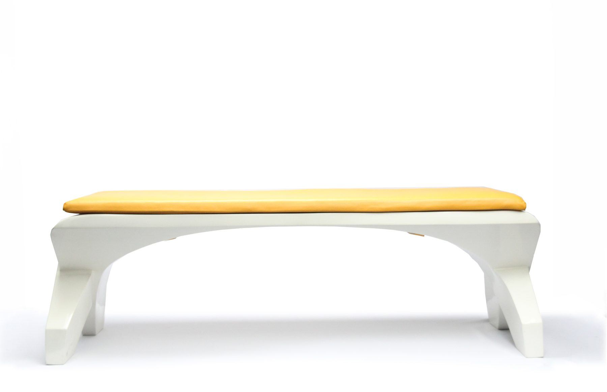
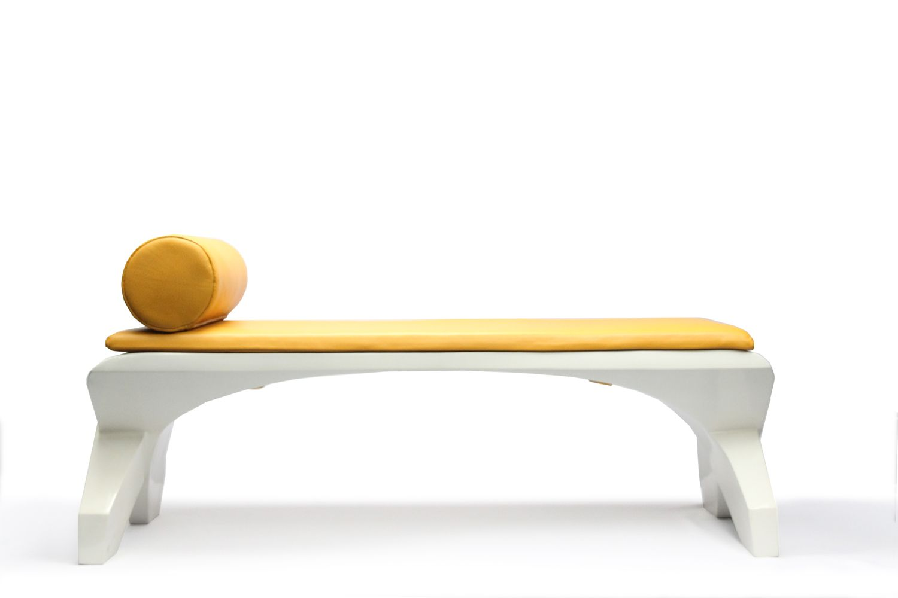
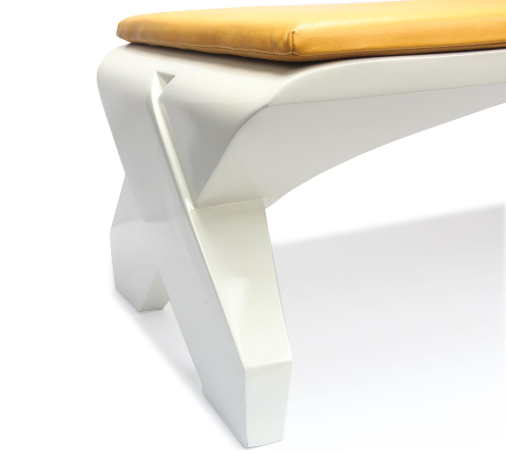

WORK 24 / 29
X Bench
Folding geometry and refined everyday flexibility.
Year2012
MaterialsFibreglass and leather
StagePrototype

DESIGN STORY
X Bench explores flexibility through a simple folding geometry. A lightly articulated frame and leather seating pad balance practical use with a refined silhouette. The design considers how a bench can respond to changing spaces while retaining the presence of a considered furniture object.
SELECTED PRESENTATIONS
- 2012International Contemporary Furniture Fair · New York

